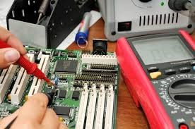
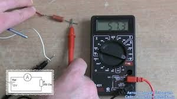
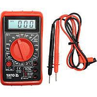
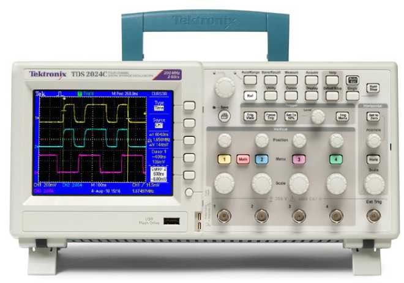
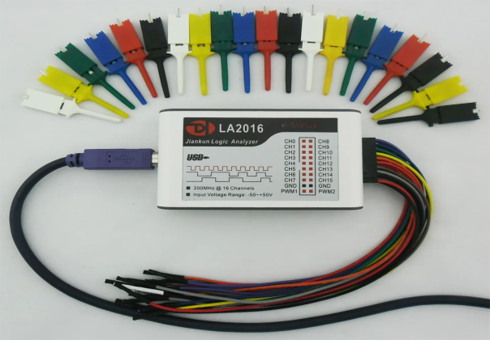
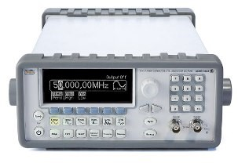
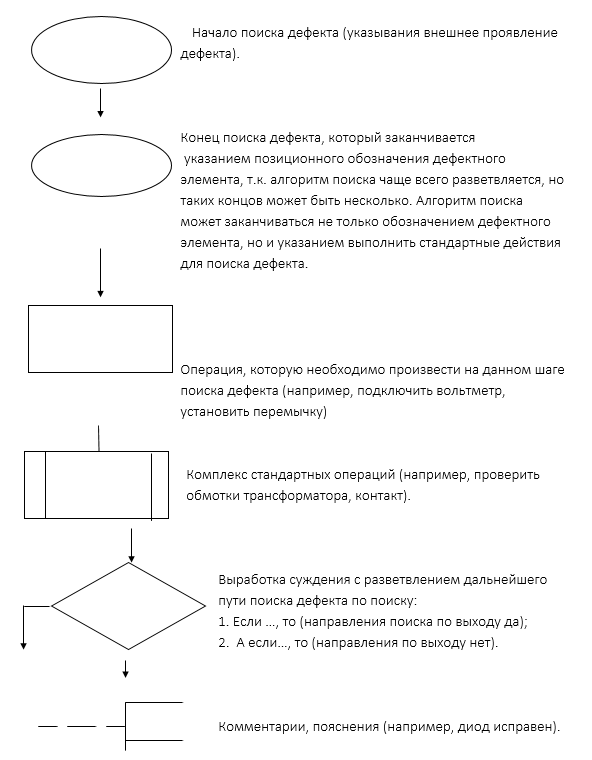
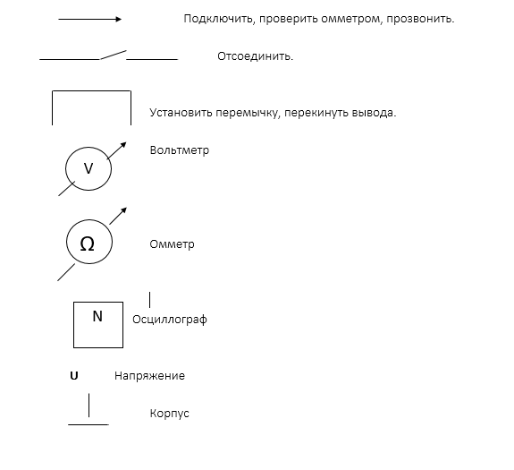

Динамическая инфографика

При эксплуатации радиоэлектронных систем (РЭС) одним из наиболее важных и сложных вопросов, который требует высокой квалификации и подготовки персонала, является не только восстановление работоспособности, но и устранение отказов аппаратуры и её функциональных элементов. Как правило, поиск неисправностей, приблизительно, занимает 60-80% общих затрат времени на восстановление аппаратуры.
В основном, на практике для отыскания неисправностей используют определенные методы и способы. На основе накопленного опыта работы с аппаратурой и знания ее слабых мест разрабатывается программа действий, которая определяет возможные проверки (испытания, измерения), их способы проведения и очередность. Радиоэлементы подвержены неизбежным отказам в процессе эксплуатации, это приводит к необходимости производить ремонт радиоаппаратуры.
Восстановление функционирования радиоэлементов – эффективный способ повышения надежности, увеличение срока службы радиоаппаратуры. Основная работа при этом отводится на диагностику, определение неисправного блока, модуля, радиоэлемента, узла.
Для определения радиоэлемент, который вышел из строя и не выполняет свои функции, необходимо получить большое количество информации. При ручной работе инженер ремонтирует РЭА по определенному, известному алгоритму. Измеряя сигналы в контрольной точке, он определяет функционирование предыдущего каскада, блока. И, если блок не работает, производится измерение режимов работы транзисторов, интегральных микросхем и на основании полученной информации регулировщик находит неисправный элемент и производит его замену.
Способ контрольных переключений.
Способ контрольных переключений требует оценки внешних признаков неисправностей путем анализа схем и использованием органов переключения, регулировок, текущего контроля (сигнальные лампочки, встроенные приборы, автоматы защиты и т.п.). При этом определяется неисправный узел, блок или тракт схемы объекта (системы), т.е. совокупность элементов, выполняющих определенную функцию объекта (преобразовательный, индикаторный блоки, блок защиты или коммутации, передающий тракт и т.д.)..
Путем переключения аппаратуры в различные режимы работы последовательно проверяется состояние трактов и блоков. Системы контроля, которые реализованы в современной аппаратуре, позволяют использовать этот способ не только для проверки состояния крупных блоков, трактов, но и для отдельных элементов, например, электронных ламп [6].
Способ промежуточных измерений.
Способ промежуточных измерений применяется для проверки узлов, блоков и элементов аппаратуры, которые невозможно проверить всеми перечисленными выше способами. Чтобы проверить состояния в специальных контрольных точках или в любых других точках аппаратуры производится измерение характеристик оборудования (напряжений, частот и других параметров сигналов). Результаты измерений сравниваются с данными технической документации. Этот способ применим во всех случаях и может считаться основным, но он требует хорошего знания рабочих процессов в аппаратуре и умения правильно пользоваться измерительными приборами.
Способ характерного признака.
При использовании способа характерного признака на вход отказавшего устройства подается измерительный сигнал с определенными заранее заданными характеристиками. По характерным признакам выходного сигнала судят о месте повреждения. Способ применим для проверки состояния таких элементов, отказы которых значительно и в явной форме проявляются в выходном сигнале. Техническая его реализация сопряжена с рядом трудностей и требует создания специальных испытательных установок для каждого конкретного типа аппаратуры. [6]
Прежде чем провести ремонт, важно определить, в чем проблема – этот процесс называется диагностикой. Итак, можно выделить два этапа проверки электронных приборов:
1. Проверка работоспособности прибора.
Не всегда случается так, что устройство полностью неработоспособное. Надо проверить не включается прибор совсем, или включается и сразу выключается, или же не работают какие-то конкретные кнопки или функции.
Например, при ремонте LCD-мониторов встречается такая проблема как выход из строя подсветки. При этом монитор может либо не включатся совсем, тогда его индикатор моргает, либо же индикатор указывает на включенное состояние, но изображения нет. В таком случае если посветить фонарём в экран можно увидеть, что изображение все-таки есть и монитор как бы работает, но он тёмный – и это только один из примеров, когда предварительная проверка упрощает диагностику.
2. Визуальный осмотр.
Внешне можно определить большинство проблем в неисправном устройстве. Это могут быть как просто сгоревшие компоненты – диоды, резисторы, транзисторы и конденсаторы, так и дефекты пайки или механические повреждение элементов и самой печатной платы.
3. Измерения.
Если плата и детали выглядят нормально, то следует переходить к измерениям. Их проводят в основном с помощью мультиметра и осциллографа. В отдельных случаях используют специализированные приборы - частотомеры, логические анализаторы и прочие.
Итак, обобщенным алгоритмом поиска неисправности является:
Визуальный осмотр следует проводить от общего к частному – осмотреть общий вид электронного устройства, сразу проверяют целостность кабелей и проводов питания. Их изоляция должна быть ровной и целой, без изломов и резких перегибов, шишек и других неравномерностей на оболочке быть не должно.
Для того, чтобы определить неисправность, очень часто помогают наши органы чувств:
Осязание может также сильно помочь в поиске неисправности. Если прибор включить в сеть и потрогать большие резисторы (их мощность рассеивания, как правило, большая), то они должны быть теплые или даже чуток горячие. Если холодные, значит или в резисторах обрыв, либо напряжение до них не доходит. Микросхемы должны быть холодноватые или чуточку теплые. Процессоры или мощные микросхемы горяченькие. Если уж слишком горячие — то, следовательно, микросхема или процессор неисправны. Холодными должны быть конденсаторы и катушки индуктивности.
Настоящий электронщик должен знать запах горелого кремния, проводов, запах горелого трансформатора, горелой платы и т.д. наизусть. Напрягите свой нюх и попробуйте уловить «аромат» неисправности. Если аппаратура сгорела при вас, то сразу принюхивайтесь и визуально осмотрите ее.
Прислушайтесь к работе неисправной аппаратуры. Может слышится какое-то потрескивание, писк, гудение или еще что-то.
Например, гудение асинхронного двигателя говорит о том, что может быть оборвана одна из фаз или не крутятся подшипники.
Если гудит трансформатор, то это может значить короткое замыкание в обмотках.
Визуальный осмотр может дать около 80% нахождения неисправности. Это может быть сгоревший элемент или печатная дорожка, а также обрыв или короткое замыкание.
После того как вы убедились в целостности устройства, нужно его разобрать и добраться к печатной плате. Осмотр внутренностей следует начинать с проверки целостности шлейфов, проводов других межблочных соединений. Важно не порвать их еще при разборке, так как часто шлейфы идут от плат к блокам клавиш и дисплеям, закрепленным на корпусе.
Далее проверяют целостность предохранителя в цепи питания, часто если он перегорел можно определить невооруженным взглядом. Он стоит около того места где подключается к плате шнур питания.
После этого осматривают наличие следов нагрева или сажи на плате и поврежденные компоненты. Рассмотрим, как выглядят неисправные электронные компоненты. Например, корпуса неисправных транзисторов и сгоревших диодов разрывает или они трескаются.
На интегральных микросхемах появляется трещина или мелкая точка. В некоторых случаях и те, и другие сгорают, оставляя в результате следы гари на плате. Обращайте внимание нет ли характерного запаха горелой изоляции. Так можно локализировать от какого элемента или участка платы исходит этот запах. Как определить сгоревшие транзисторы и микросхемы вы видите ниже.
Резисторы обычно сгорают или темнеют, реже происходит обрыв резистивного слоя и деталь выглядит исправной.
Как определить сгоревшие конденсаторы? Они в основном пробивают «накоротко» между обкладками и, если стоят в силовой цепи – тогда повреждаются дорожки платы или корпус конденсатора. Если цепь была слаботочной – пробитый конденсатор просто закоротит её без видимых следов протекания больших токов. Реже трескаются корпуса конденсаторов.
В то время как электролитические конденсаторы можно вычислить по деформированной крышке корпуса или следам протекшего вниз электролита. На крышке конденсатора есть две диагональных борозды, она нужна чтобы корпус не разорвало в аварийной ситуации. Крышка в таком случае вздувается либо трескается.
С SMD-компонентами дело обстоит несколько сложнее. Часто их крайне сложно рассмотреть на предмет целостности. Есть один метод поиска короткого замыкания в плате с SMD – это термобумага, такая бумага используется в кассовой аппарате, поэтому можно использовать любой чек. Печать на ней происходит за счет нагрева. Значит, когда вы подадите питание на плату пробитая накоротко деталь, перегреется и отпечатается на бумаге.
Для определения короткого замыкания по нагреву в большинстве случаев вам понадобится лабораторный блок питания или другой источник питания с ограничением тока. Если вы проводите диагностику цепей 220В – можете воспользоваться контрольной лампой, если есть КЗ, то лампа загорится в полный накал. Фактически она выступит в роли токоограничивающего резистора.
При визуальном осмотре важно определить состояние контактов всех разъёмных соединений. Они должны быть чистыми, без окислов с характерным медным или серебряным блеском. Если контакты не слишком сильно окислены – их можно почистить канцелярским ластиком или деревянной стороной спички.
В более запущенных случаях их нужно залудить, таким образом оловом вы восстановите контактную поверхность. Самый худший вариант, когда ни чистить, ни лудить нечего, тогда нужно либо менять плату целиком, либо припаивать к дорожкам платы проводники и соединять через них.
Подведем итоги, узнайте пять советов по внешней диагностике электронного устройства:

В современном быту нередки ситуации, когда необходимо прозвонить тестером определённую цепь или электротехнический прибор. Чаще всего они возникают, когда перестаёт работать розетка или клавишный выключатель, а также при пропадании контакта или обрыве в цепях питания отдельных устройств.
Для проверки целостности электропроводки или поиска одной жилы в составе многожильного кабеля вполне достаточно цифрового тестера, включённого в режиме измерения сопротивления. При проведении такой операции необходимо создать замкнутую цепочку, состоящую из непосредственно из мультиметра (тестера), пары измерительных «концов» и самого проверяемого проводника.
При этом по тестируемому участку пропускается небольшой по величине электрический ток, а мультиметр определяет величину его внутреннего сопротивления. Это еще не прозвонка, но довольно удобный способ.
В процессе такой проверки по показаниям дисплея мультиметра можно будет судить о целостности или обрыве в проверяемом участке цепи или проводнике. Нулевые или близкие к нескольким Омам показания означают, что проводка не имеет обрыва; при этом выдаваемый прибором электрический ток свободно через неё протекать.
Также возможен вариант, когда при проверке обнаруживается, что прибор индицирует показания в районе мегаом, а при контрольной прозвонке не выдаёт звукового сигнала. Это означает, что на участке проводки имеется не определяемый визуально внутренний обрыв.
По сути позвонка – это определение мультиметром, есть контакт между проводами, или его нет. Мультиметр выдает небольшой ток, и если цепь целая, то фиксируется напряжение, в результате раздается звуковой сигнал – звонок, а на дисплее мультиметра высвечиваются нули. Прозвонкой проверяют предохранители, лампочки, провода, целостность схем.
Подобным образом с помощью прозвонки мультиметром фиксируется короткое замыкание проводников, которые в рабочем состоянии не должны иметь между собой контакта. В исправном кабеле каждая отдельная жила при проверке должна показывать небольшое сопротивление (от долей до нескольких Ом).
Значение сопротивления определяется общей длиной проверяемого мультиметром кабельного изделия. Одновременно с этим между всеми входящими в состав многожильного кабеля и расположенными рядом проводниками контакт должен отсутствовать, что и проверяет прозвонка.
Проверка проводки
Прозвонка проводников с помощью мультиметра функционально предусмотрена в большинстве цифровых приборов этого класса. Для выставления режима прозвонки достаточно установить переключатель в положение, помеченное значком «Зуммер» и подготовить измерительную цепочку, приведённую на рисунке.
Если сгорел предохранитель – то с помощью мультиметра проверяют цепь и находят, на каком участке есть короткое замыкание. Режим прозвонки в большинстве мультиметров совмещен с режимом проверки диодов.
Если предохранитель исправен – проверяют вольтметром, приходит ли питающее напряжение на плату.
Если напряжение не приходит, то проблема, скорее всего, в кабеле, определить это можно прозвонив кабель от вилки до места подключения к печатной плате.
Дальнейшая диагностика платы электронного устройства заключается в пошаговом измерении параметров каждого из компонентов и сравнение их с номинальными величинами. Задача сильно упрощается, если у вас есть принципиальная электрическая схема ремонтируемого устройства.
Если есть осциллограф, диагностика сильно упростится, так как проверка электрических сигналов в контрольных точках, на выводах микросхем и на базах или затворах транзисторов нормально возможна лишь таким образом.
Под радиоэлектронными измерениями понимается измерение электрических, магнитных и электромагнитных величин, характеризующих работу радиоэлектронных элементов, приборов и устройств радиосвязи, автоматики и вычислительной техники.
В результате радиоизмерений определяют параметры резисторов, конденсаторов, катушек индуктивности, характеристик электровакуумных и полупроводниковых приборов, а также вид и характер радиосигналов, режимы работы и характеристики радиоаппаратуры, уровни шумов и интенсивность излучения.
Хорошо оснащенное рабочее место способствует повышению качества производимой продукции. При оборудовании рабочего места необходимо предусмотреть наличие всех инструментов, деталей, вспомогательных средств, при помощи которых осуществляется процесс работы.
Для нахождения неисправности в электронной схеме вам потребуются следующие инструменты:
| Мультиметр (тестер) - для измерения напряжений, токов и сопротивлений на различных элементах схемы. |  |
| Осциллограф - для наблюдения формы и амплитуды сигналов на разных участках схемы. |  |
| Логический анализатор - для анализа работы цифровых микросхем. |  |
| Генератор сигналов - для проверки работы схем при различных входных условиях. |  |
| Паяльник, припой и флюс - для замены неисправных компонентов. |  |
Метод анализа - позволяет определить место дефекта или направление дальнейшего поиска с помощью органов чувств человека. Метод применим на ранних этапах поиска неисправностей в аппаратуре, а также при аварийном режиме работы устройства. Анализ монтажа может производиться как при включенной, так и при выключенной аппаратуре.
Метод измерений - основан на использовании различных контрольно-измерительных приборов в процессе нахождения неисправностей. Метод является наиболее эффективным, когда предварительно уже определен неисправный блок.
Метод замены радиоэлементов - позволяет определить место неисправности в радиоэлектронной аппаратуре. Если имеется заведомо исправный (эталонный) блок, то им можно заменить кажущийся неисправным модуль ремонтируемой аппаратуры. Если в результате проведенной замены работоспособность аппаратуры восстанавливается, то неисправность следует искать более детально в выбранном модуле.
Метод эквивалентов - заключается в замене части схемы ремонтируемого изделия другим узлом или набором радиоэлементов оказывающих в результате такое же воздействие как и отсоединенная схема. Такой метод применяется, например, при проверке источников питания или оконечного каскада усилителей низкой частоты.
Метод исключения – заключается в том, чтобы из схемы проверяемой аппаратуры изъять на некоторое время отдельные радиоэлементы или блоки и после проверить работу устройства в целом.
Метод механического воздействия (простукивания) - позволяет выявить дефекты монтажа, если неисправности носят мерцающий характер. Причинами таких неисправностей может служить наличие «холодных» паек, замыкания рядом расположенных радиоэлементов, замыкания дорожек каплями припоя в следствии неаккуратной пайки или обрезками выводов элементов.
Метод электрического воздействия - позволяет получить информацию о местонахождении неисправностей в результате анализа реакции проверяемого устройства на манипуляции с характеристиками задаваемыми специалистом по ремонту.
Метод электропрогона - применяют в тех случаях, когда производят проверку после окончания ремонта или неисправности носят неустойчивый характер. При электропрогоне аппаратура включается на время от 4 до 12 часов.
Метод последовательного контроля - заключается в проверке прохождения электрического сигнала от блока к блоку до обнаружения неисправности. Этот метод целесообразно применять при поиске неисправностей в устройствах, содержащих небольшое число каскадов, выполненных на транзисторах и микросхемах. Обычно метод используют по принципу от конца к началу. То есть сначала контроль сигнала осуществляют в выходной части устройства, а затем перемещаются в сторону входа пока не будет обнаружен нормальный сигнал.
Метод «черного» ящика - это функциональное и нефункциональное тестирование без доступа к внутренней структуре компонентов системы. Он применяется, если в устройстве имеется большое количество интегральных микросхем, выполняющих определенные функции.
Процесс поиска неисправностей может включать следующие шаги:
Ознакомление с электрической схемой и ее функциональным описанием.
Проверка наличия питания на каждом элементе схемы.
Проверка правильности подключения элементов, отсутствие коротких замыканий.
Проверка напряжений, токов и сопротивлений с помощью мультиметра.
Наблюдение формы сигналов и их амплитуд с помощью осциллографа.
Анализ работы цифровых схем с использованием логического анализатора.
Тестирование схемы с различными входными сигналами с использованием генератора сигналов.
Замена неисправных компонентов на новые.
В случае сложных схем, можно использовать специализированное программное обеспечение для моделирования и анализа электрических схем.
Поиск дефекта может быть представлен в виде логически связанных операций, алгоритмов, которые могут использоваться при разработке инструкций по ремонту и настройке РТА.
Для наглядного представления алгоритмов поиска неисправностей используют следующие графические обозначения:


Ремонт электроники – это не только знания принципа работы элементов, но и интуиция, опыт и удача. Проблема в том, что нельзя составить четкой схемы действий. Мы всегда вынуждены держать в голове все принципы, методы поиска и постоянно искать, что использовать в данный момент. Необходимо понимать, на что направлено то или иное действие. На сбор обшей информации, на проверку гипотезы, на проверку того или иного блока. В тоже время необходимо вовремя оценить результат действия и вовремя переходить к следующему этапу. Когда вы собираете информацию, нужно вовремя оценить, что необходимая информация уже собрана и необходимо переходить к анализу. Не нужно зацикливаться на каком - либо этапе. Это бывает не всегда просто и не всегда очевидно.
И самое главное - соблюдайте в ходе поиска неисправностей требования техники безопасности при ремонте радиоэлектронной техники.
Этапы построения алгоритма

Федеральный государственный образовательный стандарт среднего профессионального образования по специальности 11.02.16
Монтаж, техническое обслуживание и ремонт электронных приборов и устройств, утвержден Приказом Минпросвещения России от 14 апреля 2022 г. № 235
ПОП Профессионалитета
11.02.16 Монтаж, техническое обслуживание и ремонт электронных приборов и устройств
ПМ. 02
Проведение технического обслуживания и ремонта электронных приборов и устройств
МДК 02.02
Техническое обслуживание, ремонт и оценка качества электронных приборов и узлов
Раздел
Неисправности аппаратуры и их устранение
Тема
Алгоритм поиска неисправностей
Исправное состояние; исправность - состояние объекта, при котором он способен выполнять все заданные функции объекта, его параметры соответствуют всем требованиям НТД.
Неисправное состояние; неисправность - состояние объекта, при котором он неспособен выполнять хотя бы одну из заданных функций объекта. Неисправность часто является следствием отказа объекта, но может иметь место и без него.
Отказ - событие, заключающееся в нарушении работоспособного состояния объекта, т.е. в утрате объектом способности выполнять требуемую функцию.
Блок-схема алгоритма поиска неисправностей - это схематичное представление процесса, системы или компьютерного алгоритма. Блок-схемы часто применяются в разных сферах деятельности, чтобы документировать, изучать, планировать, совершенствовать и объяснять сложные процессы с помощью простых логичных диаграмм. Для построения блок-схем применяются прямоугольники, овалы, ромбы и некоторые другие фигуры (для обозначения конкретных операций), а также соединительные стрелки, которые указывают последовательность шагов или направление процесса. Если учесть все возможные вариации, блок-схемы можно признать одним из самых распространенных видов схем во всем мире. Они широко используются в разных сферах как технической, так и нетехнической направленности.